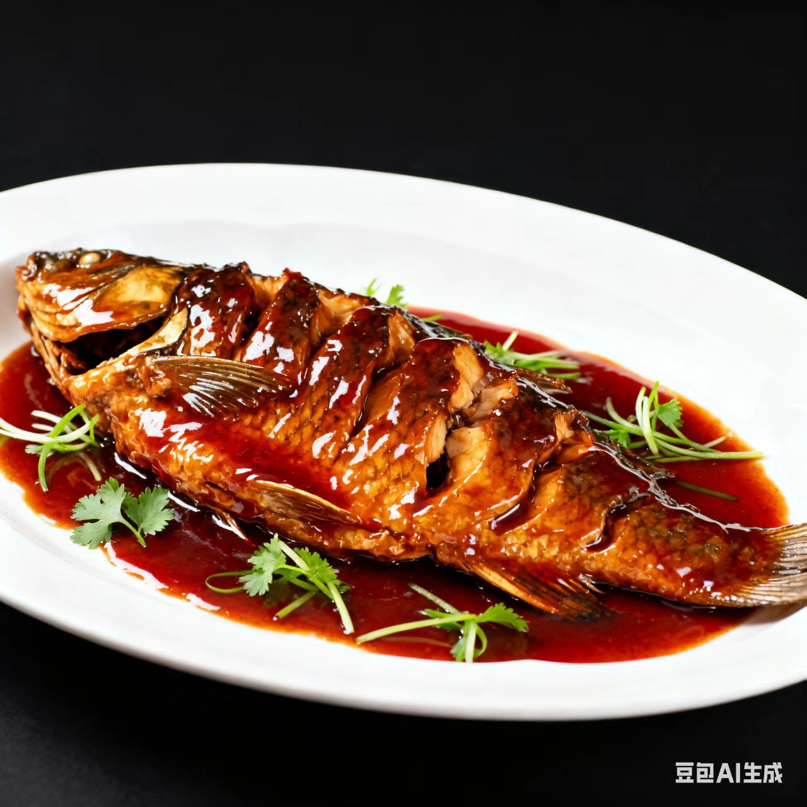

浙菜 · Zhe Cuisine
清淡鲜爽里的江南诗意与市井温情
一、起源与历史
浙菜发源于浙江（古吴越地区），唐宋时因江南富庶形成“精致饮食”风格，明清融合杭帮、甬帮、瓯帮等地方风味，烹饪思想强调“鲜爽为本”，讲究“清、香、脆、嫩”的细腻口感
二、地理与气候影响
浙江依山傍海、水网密布（河鲜、海鲜、笋菌资源极丰），气候温润让饮食偏向“清淡雅致”，同时江南文人文化的浸润，让浙菜兼具“审美性”与“烟火气”
三、主要烹调技法
- 炒
- 蒸
- 烩
- 扒
- 煎
每种技法都重“锁鲜”，如蒸菜保留本味，醉菜酒香入鲜，炒功追求“快火断生”
四、代表菜肴
-
西湖醋鱼

-
东坡肉
-
宋嫂鱼羹
五、风味与审美
浙菜的独特在于“以鲜为魂、以淡为韵、以雅为骨”，追求清中带鲜、嫩中藏香的平衡，味觉逻辑体现了浙江人“细腻而通透”的生活哲学
六、文化意象
浙菜不仅是饮食，更是江南“诗意生活”的载体——从西湖边的“楼外楼”宴席到巷弄里的“片儿川”，浙菜承载了“文人雅趣与市井烟火的交融”
七、地方俗语
上有天堂，下有苏杭，吃有浙菜
浙菜鲜，鲜在一口春（时鲜食材）
拓展视野：视频
拓展视野：学术资料
| 研究论文 / 报告名称 | 链接 |
|---|---|
| 《浙菜饮食文化的地域特色研究》 | 查看论文 |